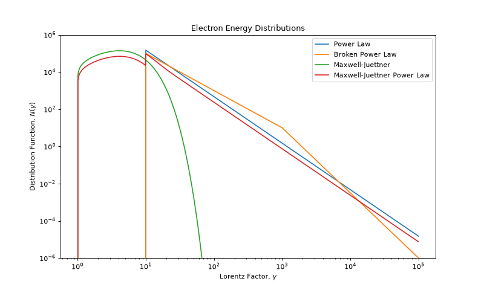
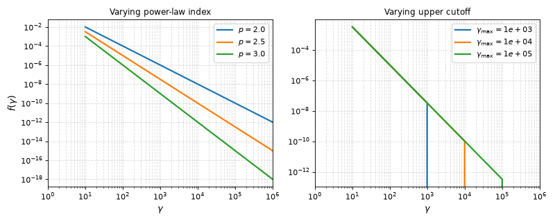
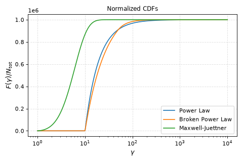
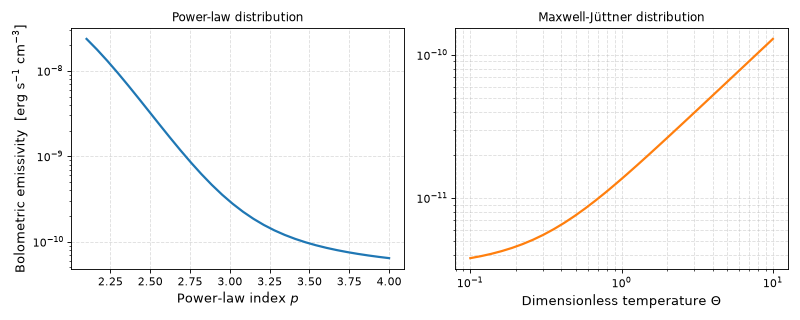

Synchrotron Electron Distributions#
See also
Synchrotron From A Population of Electrons for the corresponding theory of electron populations and equipartition. Synchrotron Radiation Theory for a general introduction to synchrotron emission.
The electron_distributions module provides encapsulated
classes for all electron distributions used in Trilobite’s synchrotron framework. Each class
packages the PDF, statistical moments, normalization routines, and bolometric emissivity calculations
for a particular population model, giving a single, consistent interface regardless of whether the
underlying distribution is thermal, non-thermal, or a mixture of both.
Overview#
Trilobite provides explicit support for five electron distributions: power-law (PowerLaw),
broken power-law (BrokenPowerLaw), Maxwell-Jüttner (MaxwellJuettner; the
relativistic thermal distribution), and two mixed thermal-plus-nonthermal variants
(MaxwellJuettnerPowerLaw and MaxwellJuettnerBrokenPowerLaw). All five classes
share a common abstract interface defined by ElectronDistribution, so code written against
that interface works with any distribution.
To start working with a distribution, import it directly from the module:
from trilobite.radiation.synchrotron.electron_distributions import (
PowerLaw,
BrokenPowerLaw,
MaxwellJuettner,
MaxwellJuettnerPowerLaw,
MaxwellJuettnerBrokenPowerLaw,
)
All distribution classes are stateless: there are no instances to construct and no parameters
to store on an object. Every method is a classmethod that accepts distribution parameters
as keyword arguments directly. This design makes it easy to vectorize over parameters in an
inference loop without carrying mutable state.
The following plot shows the shape functions \(f(\gamma)\) for each supported distribution across a representative range of Lorentz factors:
import numpy as np
import matplotlib.pyplot as plt
from trilobite.radiation.synchrotron.electron_distributions import (
PowerLaw, BrokenPowerLaw, MaxwellJuettner, MaxwellJuettnerPowerLaw,
)
# Define a range of Lorentz factors for the plot.
gamma = np.logspace(0, 5, 1000)
# Set the total number of electrons
N_total = 1e6
# Set the parameter dictionaries
params = [
{'p': 2.5, 'gamma_min': 10.0, 'gamma_max': 1e5},
{'p1': 2.0, 'p2': 3.5, 'gamma_c': 1e3, 'gamma_min': 10.0, 'gamma_max': 1e5},
{'Theta': 2.0},
{'delta': 0.5, 'Theta': 2.0, 'p': 2.5, 'gamma_min': 10.0, 'gamma_max': 1e5},
]
# Compute the norms for each distribution.
norms = [
PowerLaw.normalize_from_n_total(N_total, **params[0]),
BrokenPowerLaw.normalize_from_n_total(N_total, **params[1]),
MaxwellJuettner.normalize_from_n_total(N_total, **params[2]),
MaxwellJuettnerPowerLaw.normalize_from_n_total(N_total, **params[3]),
]
pdfs = [
PowerLaw.pdf(gamma, **params[0], norm=norms[0].value),
BrokenPowerLaw.pdf(gamma, **params[1], norm=norms[1].value),
MaxwellJuettner.pdf(gamma, **params[2], norm=norms[2].value),
MaxwellJuettnerPowerLaw.pdf(gamma, **params[3], norm=norms[3].value),
]
# Plot the distributions.
plt.figure(figsize=(10, 6))
labels = ['Power Law', 'Broken Power Law', 'Maxwell-Juettner', 'Maxwell-Juettner Power Law']
for pdf, label in zip(pdfs, labels):
plt.plot(gamma, pdf, label=label)
plt.xscale('log')
plt.yscale('log')
plt.xlabel(r'Lorentz Factor, $\gamma$')
plt.ylabel(r'Distribution Function, $N(\gamma)$')
plt.title('Electron Energy Distributions')
plt.ylim([1e-6,1e6])
plt.legend()
plt.show()
(Source code, png, hires.png, pdf)
{kind=link}
{kind=link}

Note
Distributions return the shape function \(f(\gamma)\) by default (i.e. norm=1).
Physical number densities require an amplitude \(N_0\); see Normalization below
for how to compute it from physical parameters.
Statistical Properties#
Evaluating the PDF#
The fundamental method on every distribution is pdf(), which returns
the differential electron number distribution \(N(\gamma) = N_0\,f(\gamma)\):
is the number of electrons with Lorentz factors in \([\gamma,\,\gamma+d\gamma]\).
import numpy as np
from trilobite.radiation.synchrotron.electron_distributions import PowerLaw
gamma = np.logspace(1, 5, 200)
N = PowerLaw.pdf(gamma, p=2.5, gamma_min=10.0, gamma_max=1e5, norm=1.0)
The norm argument is the distribution amplitude \(N_0\) (default 1.0). Scalar and
array inputs are both accepted; the return type matches the input shape. Values outside the
distribution support are zero.
The plot below illustrates how the power-law index p and the energy cutoffs shape the PDF:
import numpy as np
import matplotlib.pyplot as plt
from trilobite.radiation.synchrotron.electron_distributions import PowerLaw
gamma = np.logspace(1, 6, 500)
fig, axes = plt.subplots(1, 2, figsize=(10, 4))
for p in [2.0, 2.5, 3.0]:
axes[0].loglog(gamma, PowerLaw.pdf(gamma, p=p, gamma_min=10.0), label=f'$p={p}$', lw=2)
axes[0].set_xlabel(r'$\gamma$', fontsize=12)
axes[0].set_ylabel(r'$f(\gamma)$', fontsize=12)
axes[0].set_title('Varying power-law index', fontsize=11)
axes[0].legend(fontsize=10)
axes[0].grid(True, which='both', ls='--', alpha=0.4)
axes[0].set_xlim(1, 1e6)
for gmax in [1e3, 1e4, 1e5]:
lbl = rf'$\gamma_{{\max}}={gmax:.0e}$'
axes[1].loglog(gamma, PowerLaw.pdf(gamma, p=2.5, gamma_min=10.0, gamma_max=gmax), label=lbl, lw=2)
axes[1].set_xlabel(r'$\gamma$', fontsize=12)
axes[1].set_title('Varying upper cutoff', fontsize=11)
axes[1].legend(fontsize=10)
axes[1].grid(True, which='both', ls='--', alpha=0.4)
axes[1].set_xlim(1, 1e6)
plt.tight_layout()
(Source code, png, hires.png, pdf)
{kind=link}
{kind=link}

Distribution Support#
Every distribution exposes a support() method that returns the interval
\((\gamma_{\min},\,\gamma_{\max})\) over which the PDF may be non-zero:
PowerLaw.support(p=2.5, gamma_min=10.0, gamma_max=1e5)
# (10.0, 100000.0)
MaxwellJuettner.support(Theta=2.0)
# (1, inf)
The support bounds are used internally by normalization, moment integration, and CDF calculations.
Moments, Mean, and Variance#
The \(k\)-th raw moment of the shape function is
This is available through moment():
# Zeroth moment (norm of the shape function):
PowerLaw.moment(0, p=3.0, gamma_min=1.0, gamma_max=np.inf)
# Second moment (used for bolometric emissivity):
PowerLaw.moment(2, p=4.0, gamma_min=1.0, gamma_max=np.inf)
For PowerLaw and BrokenPowerLaw, moment() is
evaluated analytically. For MaxwellJuettner, exact closed forms are implemented for
\(k = 0, 1, 2\); higher orders fall back to numerical quadrature. For mixed distributions,
moments are computed by linearity from the component moments.
The mean, variance, and standard deviation of \(\gamma\) are derived from the moments and are independent of the distribution amplitude:
PowerLaw.mean(p=3.0, gamma_min=10.0, gamma_max=1e5)
PowerLaw.var(p=3.0, gamma_min=10.0, gamma_max=1e5)
PowerLaw.std(p=3.0, gamma_min=10.0, gamma_max=1e5)
Two energy variants are also available. mean_energy() returns
\(m_e c^2 \langle\gamma\rangle\) (total energy including rest mass), while
mean_kinetic_energy() returns \(m_e c^2(\langle\gamma\rangle - 1)\).
Both return floats in erg.
Cumulative Distribution and Survival Functions#
The cumulative distribution function (CDF) and complementary survival function (SF) integrate the PDF from the lower support bound up to (or beyond) a given Lorentz factor:
# CDF value: fraction of electrons with gamma < 1e3
PowerLaw.cdf(1e3, norm=1.0, p=2.5, gamma_min=10.0, gamma_max=1e5)
# Survival function: electrons above gamma
PowerLaw.sf(1e3, norm=1.0, p=2.5, gamma_min=10.0, gamma_max=1e5)
Logarithmic variants logpdf(), logcdf(),
and logsf() are also available for log-space calculations.
Plotting the CDF for all distributions
(Source code, png, hires.png, pdf)
{kind=link}
{kind=link}

Electron Counts#
Two shorthand methods integrate the distribution over the full support or over a sub-interval:
n_total(): \(N_{\rm tot} = N_0\,M_0\), the total number of electrons.n_eff(): \(N_{\rm eff} = N_0\,M_2\), the \(\gamma^2\)-weighted count used for bolometric synchrotron power.n_between()andn_eff_between(): the same integrals restricted to a Lorentz-factor interval \([a, b]\).
import astropy.units as u
from trilobite.radiation.synchrotron.electron_distributions import PowerLaw
norm = 1e-3 # amplitude in cm^-3
n_tot = PowerLaw.n_total(norm=norm, p=2.5, gamma_min=10.0, gamma_max=1e5)
n_eff = PowerLaw.n_eff(norm=norm, p=2.5, gamma_min=10.0, gamma_max=1e5)
# Electrons between gamma = 1e2 and 1e3
n_band = PowerLaw.n_between(1e2, 1e3, norm=norm, p=2.5, gamma_min=10.0, gamma_max=1e5)
The \(\gamma^2\) weighting in n_eff() arises because the
bolometric synchrotron power per electron scales as \(P_{\rm syn} \propto \gamma^2 U_B\),
so \(N_{\rm eff}\) is the natural normalization factor for total power calculations.
Normalization#
Hint
See Microphysical Closures and Equipartition for the underlying theory of equipartition normalization.
In physical applications the distribution amplitude \(N_0\) (in \(\mathrm{cm^{-3}}\)) must
be set by a physical closure condition. Trilobite provides four normalization routes, all returning
\(N_0\) as an Quantity in \(\mathrm{cm^{-3}}\).
From a Known Electron Number Density#
If the total electron number density \(n_e\) is known independently (for example from a density
profile or a particle-in-cell simulation), pass it to normalize_from_n_total():
import astropy.units as u
from trilobite.radiation.synchrotron.electron_distributions import PowerLaw
N0 = PowerLaw.normalize_from_n_total(
1e-3 * u.cm**-3,
p=2.5, gamma_min=10.0, gamma_max=1e5,
)
# <Quantity ... 1 / cm3>
For the Maxwell-Jüttner distribution, the shape function is already probability-normalized (\(M_0 = 1\)), so \(N_0 = n_e\) exactly.
From a Magnetic Field via Equipartition#
The most common route in the synchrotron literature is the equipartition closure [1]. Given a magnetic field strength \(B\) and the fractions \(\varepsilon_e\) and \(\varepsilon_B\) of the thermal energy density placed into electrons and magnetic fields respectively, the normalization satisfies
which Trilobite solves via normalize_from_magnetic_field():
N0 = PowerLaw.normalize_from_magnetic_field(
B=0.5 * u.G,
epsilon_B=0.1,
epsilon_E=0.1,
p=2.5, gamma_min=10.0, gamma_max=1e5,
)
From a Thermal Energy Density via Equipartition#
If instead the thermal energy density \(u_{\rm therm}\) is the primary known quantity
(as in shock-dynamics models), use normalize_from_energy_density():
N0 = PowerLaw.normalize_from_energy_density(
u_therm=1e5 * u.erg / u.cm**3,
epsilon_E=0.1,
p=2.5, gamma_min=10.0, gamma_max=1e5,
)
The corresponding magnetic field can be obtained from the pair of module-level helpers:
from trilobite.radiation.synchrotron.electron_distributions import (
equipartition_magnetic_field,
equipartition_electron_energy,
)
B = equipartition_magnetic_field(u_therm=1e5 * u.erg / u.cm**3, epsilon_B=0.01)
u_e = equipartition_electron_energy(u_therm=1e5 * u.erg / u.cm**3, epsilon_e=0.1)
From a Known Effective Radiating Density#
When the \(\gamma^2\)-weighted integral is the directly constrained quantity (for example
from a measured bolometric synchrotron luminosity), use
normalize_from_n_eff():
N0 = PowerLaw.normalize_from_n_eff(
n_eff=5e-5 * u.cm**-3,
p=2.5, gamma_min=10.0, gamma_max=1e5,
)
Synchrotron Emission Calculations#
Given the normalization \(N_0\) and the magnetic field, the bolometric synchrotron emissivity is
where \(M_2 = \int \gamma^2 f(\gamma)\,d\gamma\) is the second raw moment of the shape
function (i.e. n_eff() with norm=1). This follows from the
fact that the Thomson-regime power per electron scales as
\(P \propto \gamma^2 U_B\) [2].
Trilobite computes this in one call — internally deriving \(N_0\) from the equipartition
parameters — via bol_emiss_from_magnetic_field() or
bol_emiss_from_energy_density():
import astropy.units as u
from trilobite.radiation.synchrotron.electron_distributions import PowerLaw
j = PowerLaw.bol_emiss_from_magnetic_field(
B=0.5 * u.G,
epsilon_B=0.1,
epsilon_E=0.1,
p=2.5, gamma_min=10.0, gamma_max=1e5,
)
# <Quantity ... erg / (cm3 s)>
import astropy.units as u
from trilobite.radiation.synchrotron.electron_distributions import PowerLaw
j = PowerLaw.bol_emiss_from_energy_density(
u_therm=1e5 * u.erg / u.cm**3,
epsilon_B=0.1,
epsilon_E=0.1,
p=2.5, gamma_min=10.0, gamma_max=1e5,
)
These methods work identically for every distribution class — including the mixed
thermal/non-thermal populations — since they delegate through the shared
ElectronDistribution interface.
Example: comparing bolometric emissivity across distributions
The following example computes the bolometric emissivity for a range of temperatures or spectral indices to illustrate how the choice of electron distribution affects the total radiated power.
(Source code, png, hires.png, pdf)
{kind=link}
{kind=link}

Freezing Distribution Functions#
For applications that need a plain callable \(f(\gamma)\) — for example to pass to a
numerical SED engine or to perform custom quadrature — use
as_callable(). This method freezes the distribution amplitude
and shape parameters, returning a single-argument function:
from trilobite.radiation.synchrotron.electron_distributions import BrokenPowerLaw
N = BrokenPowerLaw.as_callable(
norm=1e-3,
p1=2.0, p2=3.5, gamma_c=1e3,
gamma_min=10.0, gamma_max=1e5,
)
# N is now a plain callable:
import numpy as np
gamma = np.logspace(1, 5, 200)
values = N(gamma) # shape (200,)
This is the recommended way to pass an electron distribution to
NumericalSynchrotronEngine, which
accepts any callable with the signature N(gamma):
from trilobite.radiation.synchrotron.SEDs.numerical import NumericalSynchrotronEngine
import astropy.units as u
engine = NumericalSynchrotronEngine()
engine.load_first_kernel()
N = BrokenPowerLaw.as_callable(
norm=1e-3, p1=2.0, p2=3.5, gamma_c=1e3,
gamma_min=10.0, gamma_max=1e5,
)
flux = engine.compute_flux_density(
nu=np.logspace(8, 18, 100) * u.Hz,
N_gamma=N,
B=0.5 * u.G,
R=1e16 * u.cm,
luminosity_distance=100 * u.Mpc,
)
Available Distributions#
Non-Thermal Distributions
|
Truncated power-law distribution of electron Lorentz factors. |
Truncated broken power-law distribution of electron Lorentz factors. |
Thermal Distribution
Relativistic thermal electron distribution (Maxwell-Jüttner). |
Mixed Thermal + Non-Thermal Distributions
Base class for mixed thermal and non-thermal electron distributions. |
|
Mixed Maxwell-Jüttner plus power-law electron distribution. |
|
Mixed Maxwell-Jüttner plus broken-power-law electron distribution. |
Writing Custom Distribution Functions#
To add a new distribution, subclass ElectronDistribution and implement the two
abstract methods:
import numpy as np
from trilobite.radiation.synchrotron.electron_distributions import ElectronDistribution
class ExponentialCutoffPowerLaw(ElectronDistribution):
"""Power-law with an exponential cutoff: f(gamma) = gamma^{-p} exp(-gamma/gamma_cut)."""
@classmethod
def pdf(cls, gamma, norm=1.0, *, p, gamma_min=1.0, gamma_cut, **_):
gamma = np.asarray(gamma, dtype="f8")
inside = gamma >= gamma_min
result = np.where(
inside,
norm * gamma**(-p) * np.exp(-gamma / gamma_cut),
0.0,
)
return result.reshape(()) if result.ndim == 0 else result
@classmethod
def support(cls, *, gamma_min=1.0, **_):
return float(gamma_min), np.inf
Providing only these two methods immediately unlocks the full base-class interface:
moment(), cdf(),
mean(), n_total(),
n_eff(), bol_emiss_from_magnetic_field(),
and as_callable() all work immediately via numerical quadrature.
Override moment() with an analytic expression whenever performance
matters — every statistical and normalization method delegates to it.
Note
The **_ catch-all in pdf and support signatures is a Trilobite convention that
allows distribution parameters to be passed in a shared **kwargs dict without raising
errors for irrelevant keys. Always include it in custom distributions for API compatibility.
Developer Notes#
Distribution classes provide containers for the many important functions related to each electron population. Analytical plug-in synchrotron SEDs (such as those in
SEDs) are not included in these classes because closed-form SEDs exist only for certain distributions (power-law, broken power-law) and not for others (Maxwell-Jüttner). The distribution classes are therefore intentionally agnostic about SED computation.Nonetheless, these distribution functions are consumed by the analytical SED classes to compute normalizations (
normalize_from_energy_density()) and evaluate PDFs (as_callable()) where relevant.The
MixedThermalNonThermalbase class implements the PDF mixture, moment linearity, and support union for all hybrid distributions. Concrete subclasses only need to declareNON_THERMAL_DISTRIBUTIONas a class variable pointing to the appropriate non-thermal class (e.g.PowerLaworBrokenPowerLaw).Private
_normalize_*and_bol_emiss_*methods accept bare CGS floats and skip unit conversion, making them suitable for use inside inference hot loops. The corresponding public methods wrap them withensure_in_units()and returnQuantityobjects.
References